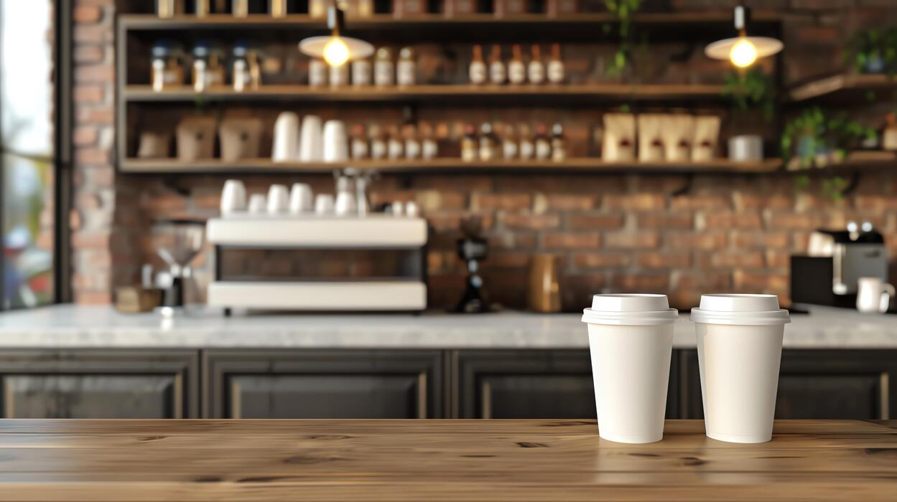
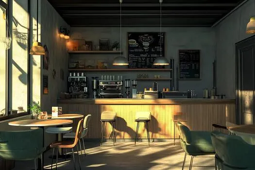

About The Daily Grind Café

The Daily Grind Café is a welcoming coffee shop and bakery located in the heart of Melville, Johannesburg. We provide freshly brewed coffee, delicious bakery treats, and a comfortable space for our community to enjoy.
Our café is designed for students, freelancers, and local residents looking for a place to meet, work, relax, or simply enjoy a good cup of coffee.
Our Mission
To brew community, one cup at a time.
Our mission is to create more than just a place to enjoy coffee. We aim to provide a welcoming environment where students, freelancers, friends, and local residents can connect, work, relax, and feel part of the community.
Through quality coffee, freshly baked products, friendly service, and a comfortable atmosphere, we strive to make every visit a meaningful part of someone's day.
Our Vision

Our vision is to become a favourite community café in Melville, known for quality products, welcoming service, and an environment that brings people together.
We want The Daily Grind Café to be a space where people can start their mornings, meet with friends, complete their work, discover new ideas, and enjoy a moment away from their busy routines.
As we grow, we aim to maintain our warm and personal atmosphere while continuing to serve our community with quality coffee and freshly prepared bakery products.
Our Location
The Daily Grind Café is located at:
7 7th Ave, Melville, Johannesburg, South Africa
Our location makes the café a convenient meeting place for students, freelancers, and local residents looking for a comfortable space to enjoy coffee and connect with others.